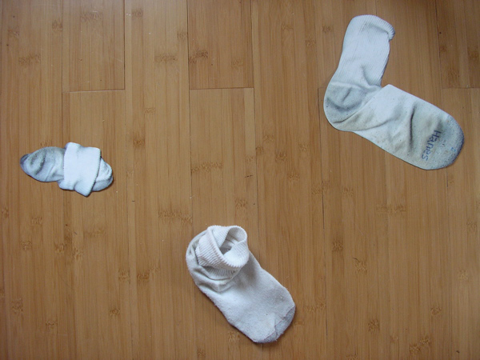
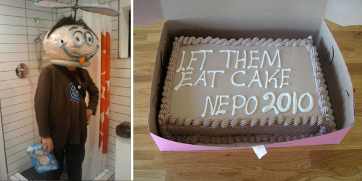

March 1, 2010: Nepo house show recap

Kenneth Shaw, Matthew Offenbacher, Natalie Campbell, Heidi Neilson, Liz Zanis, Carissa Carman, Glenn Herlihy, David Lasky, Erin Shafkind, Dave Smith, Bellen Drake, Jason Hirata, Kim Haworth, Serrah Russell, Jennifer Dixon, Janel Twogood, Rumi Koshino, Blake Hotchkiss, Mark Callen, Dan Webb and an objectified guest Stefan Knorr.
curated and contributed to by yours truly with great help from partner and collaborator Scott Hotchkiss
First of all thanks to everyone who came and many thanks to all the artists that participated and helped to make Nepo idea a reality. And what a great reality - I know I am tooting my own horn when I say this, but I think the show is pretty amazing.
Working with so many creative people was really (challenging and) great. No seriously, it was one of the best things that happened to me in a while. I really enjoyed the collaboration - your help is what kept me going in the last few days before the show (otherwise I might have pronounced myself too crazy and thrown in a towel).
And once again we had a great party. The Purple Polka Dots actually played! - they played kickball and a few awesome songs: Purple Elephant, Coke and Bacon, and Where is the White Tape (or similar). I will post the pictures of the band playing when I get them. They also seemed to enjoy playing burned waffle/oreo checkers. The rules clearly stated: "You jump, you eat!" and the kids didn't need much prompting.
I cannot guarantee anything that was said, but if you were fortunate enough you got a Docent tour or a poem. I'm not sure which was better, but I witnessed one poem (A True Account of Talking To The Sun At Fire Island" by Frank O'Hara) recited by Quisp in the bathroom upstairs and it was beautiful and awesome. Thanks Seanjohn!
Among other personal highlights is that the next morning I got to wake up in a gallery (I like looking at beautiful panties much more than closet stuffed with clothes I haven't worn in years). As a matter of fact I will get to do that for another couple of weeks - we will keep the show up, so if you missed it you can still come see it. We will be open next Saturday March 6th, 4 - 8 pm and by appointment.
And now, I will give you a tour of Nepo show. Follow me (if you can) ----->From top clockwise: entry room with bench by Matthew Offenbacher, small clay house by Janel Twogood, mountain with skier by Rumi Koshino (hint: take a note of a small blue painting in the living room), under that is - illuminating (literally) sculpture by Jason Hirata, to the left - reflection puddle, below - Viewing art (in the home of Charles and Emma Frye), opposite wall with ladder by Janel Twogood, felt bricks by Matthew Offenbacher, orange Nepo house,335 feet of chaos and a dip stick, going back up - our cat Pluto really likes the bench (there is something about Matt and cats), and last but not least my modernist ikea kitchen cabinet door sculpture (which I had to rebuild about fifty times during the evening since everyone kicked it going to the bathroom).
now it is just a step from there to the bathroom which is featuring Master Carver Shaving - an installation by Dan Webb (and yes, those are marble chunks - I will take a guess that they are a bi-product of Double Knot or Stone Fly)
in the main space upstairs runs a projection of
one left over ...
(the basis of the art is the sun and its shadow)
and a picture of Entropy in the stairwell - now renamed Colecting Dust.
Is this what happens to all the artwork? I think so, eventually. Unless someone dusts it off...
...if you haven't yet, come see the show before the dust settles. Nepo is open next Saturday March 6th, 4-6 pm
goodbye, and see you next time!
klara
--------------------------------------------------------------------------
March 7, 2010: Nepo on Slog
... and update about second showing

You can now read Nepo review by Jen Graves on Stranger's Slog
Last weekend there were a few minor changes to the show: some welcomed and some less. Among the welcomed additions was a cake our friend Seb brought over - thanks Seb it was Remolitious! We even convinced few visitors to eat it before dinner - you know at Nepo most everything is backwards.
The broken window in the entry room falls into the not-so-welcomed-change category (here are the suspects, pretending that nothing happened).
A few new projection pics:
Thanks to all that came and two-times-thanks to those that came twice and brought their friends! It was a much quieter evening, easier to see all the art in nooks and crannies.
Bye Nepo Two. Stay tuned - Nepo 3 coming up in June (we are a seasonal outfit).
xok and team
-------------------------------------------------------------------------------------
Open Hou?e: Nepo >>>>FEBRUARY 27, 2010

Save the date and come knock on our door: You are invited to the next installment of home_page.project:
Open Hou?e : Nepo (A HUMOROUS APPROACH TO THE SERIOUS ART OF LIVING)February 27th 2010, 6:00 pm - 11:00 pm
1723 S Lander Street
Seattle WA 98144
Please come curious and prepared to use you investigative skills. Expect a homespun, high-end affair: a visual experience perched on the threshold of spontaneous creative experience and perfected mastery. Among our auditory attractions will be Live Poetry Juke Box and The Purple Dots, a five piece band of eight-year-olds (band name is subject to change). Not Decent Docent will be available for those needing a little interpretative help.
XO Nepo team - see you at Nepo House!
-------------------------------------------------------------------------------------